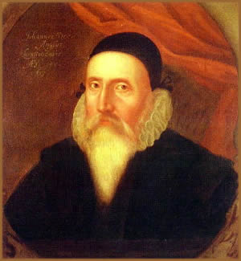
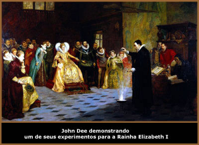
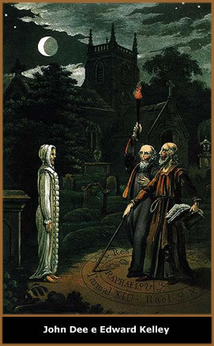

John
Dee nasceu em 13 de julho de 1527, em Londres, Inglaterra,
e foi geógrafo, astrólogo, matemático
e astrônomo; também um incansável estudioso
de alquimia e das ciências herméticas sem que,
no entanto, estivesse associado a alguma doutrina secreta,
mesmo tendo influenciado diversas outras. Ainda assim, sua
imagem notabilizou-se para a posteridade como um dos ocultistas
mais influentes de seu tempo e de seus sucessores.
Sua
biografia é tão rica quanto incógnita.
De sua vida adulta, sabe-se que foi casado por três
vezes e pai de oito filhos. Filho do mercador Roland Dee,
John Dee teve uma boa educação acadêmica
em Cambridge. Seus valores intelectuais foram prontamente
recebidos por seu ciclo social e acadêmico, tornando-se
posteriormente um dos membros fundadores do célebre
Trinity College.
Em 1547,
teria sido expulso de Cambridge sob acusação
de bruxaria. Entre o final da década de 1540 e início
da década seguinte, Dee viajou pela Europa passando
por Lovaina e Bruxelas, chegando também a lecionar
em Paris. Esta etapa de sua vida proporcionou-lhe acumular
experiências e conhecimento sobre diversos assuntos
como matemática e astronomia. Durante este período,
sustentou-se economicamente elaborando mapas astrais para
a elite européia.
Em seu
retorno à Inglaterra, teve a oportunidade de lecionar
em Oxford, em 1554. Porém, recusou a oferta por não
concordar com a postura das universidades frente às
disciplinas mais relevantes. Nesta mesma época, mais
do que apoio financeiro para dar prosseguimento aos seus
estudos, Dee recebeu também da Duquesa de Northumberland,
o antigo e misterioso manuscrito Voynich. De autoria desconhecida,
o manuscrito é repleto de ilustrações,
símbolos uma linguagem incompreensível.
Dee
e a Monarquia
No ano seguinte, já
desfrutando de grande popularidade e respeito entre o círculo
intelectual britânico, traçou o horóscopo
da Rainha Mary e da princesa Elizabeth. Foi através
de seus préstimos ocultistas que obteve apoio financeiro
da monarquia; sendo até mesmo nomeado como "astrólogo
real". Porém, em um período de plena
influência da Igreja e atividade da Inquisição,
este serviço prestado à nobreza rendeu-lhe
graves acusações, incluindo uma suposta "traição"
à Rainha.
Isto ocorreu porque Elizabeth
I questionou o astrólogo a respeito do dia da morte
da Rainha Mary. Dee consultou os astros e respondeu-lhe
prontamente. A precisão e segurança de Dee
ao afirmar a data da morte da Rainha Mary gerou a desconfiança
de que um plano para assassinar a monarca estava sendo articulado.
O astrólogo foi acusado de bruxaria e de tramar contra
a vida da Rainha.
Nesta ocasião, Dee
agiu em sua própria defesa, sendo considerado inocente
após intervenção da própria
Princesa Elizabeth. Posteriormente, ainda teve de passar
por um "exame religioso" inquirido pelo Bispo
Edmund Bonner. Mais uma vez, Dee foi inocentado e ainda
tornou-se amigo próximo de Bonner.
Um de seus maiores feitos
ocorreu em 1556 quando propôs à monarquia um
projeto de uma biblioteca nacional que não apenas
reunisse uma gigantesca quantidade de livros, manuscritos
e registros, mas que também zelasse pela sua preservação.
A idéia foi desconsiderada pela Rainha. Mas, Dee,
incansável em seu propósito, passou a reunir
em sua própria residência em Montlake, livros,
registros e manuscritos de todo o país e da Europa.
Em pouco tempo, sua biblioteca particular já chamava
a atenção de estudantes vindos de todos os
lugares, tornando-se uma referência de cultura e aprendizado
que ia além dos centros acadêmicos.
A
ascensão ao trono de Elizabeth em 1558 favoreceu
Dee que, gozando de sua confiança, tornou-se uma
espécie de conselheiro astrológico e científico
da nova Rainha; sendo ele próprio, inclusive, quem
sugeriu a data mais apropriada para a cerimônia de
coroação. No início da década
de 1570, mais uma vez, seu prestígio com a monarquia
foi importante para receber auxílio médico
quando esteve gravemente enfermo.
No mesmo período,
também atuou com auxílio técnico as
viagens marítimas britânicas, sendo também
um dos entusiastas do surgimento de um "império
britânico". A publicação de 1577,
Memórias Gerais e Raras no que Concerne a Perfeita
Arte da Navegação, que fortalecia as
ambições inglesas para as terras do Novo Mundo.
No ano de 1564, Dee escreveu
um tratado intitulado Monas Hieroglyphica (mônada
hieroglífica) que consistia em uma interpretação
cabalística de um símbolo elaborado por ele
mesmo e que tentava expressar uma unidade mística
da criação. Esta publicação
recebeu uma ótima recepção em seu tempo;
porém, atualmente, torna-se difícil interpretá-la.
Entretanto, um de seus trabalhos mais influentes foi uma
obra sobre matemática, o prefácio matemático,
que abordava sua importância aritmética sobre
as ciências e as artes. Parallacticae Commentationis
Praxos Que- Teoremas Trigonométricos foi escrito
em 1573.
Dee,
Kelley e os Anjos
A partir de aproximadamente
1580 a vida de John Dee tomou outros rumos. Foi nesse período
que seu contato com o ocultismo se tornou mais freqüente
e profundo. Tudo começou quando Dee, imerso em orações,
teria recebido a visita do Anjo Uriel, que lhe ofereceu
uma espécie de espelho de cristal que permitia a
Dee visualizar mundos espirituais e outras formas de inteligência.
Dee recrutou dois auxiliares
para ajudá-lo na observação e interpretação
das imagens surgidas no espelho: Barnabas Saul e Edward
Kelley. Saul foi dispensado pouco depois por suspeita de
espionagem. Dee e Kelly deram continuidade aos estudos.
Edward
Kelley era mais de vinte anos mais novo que Dee e trazia
um histórico de vida polêmico e inconstante.
Kelley era um hábil calígrafo que usava seus
talentos para falsificar documentos. Fato que lhe rendeu
reclusões e a amputação de suas duas
orelhas. Certa vez, quando estava na região de Glastonbury,
Kelley recebeu de um amigo um tratado que abordava princípios
alquímicos como a transmutação do metal
em ouro; além de substâncias em pó que
seriam as "tinturas da filosofia hermética".
Tanto o manuscrito quanto as substâncias teriam sido
encontradas no momento da violação de um túmulo
de um bispo católico da região. Portanto,
neste momento, Kelley já trazia uma considerável
bagagem no mundo dos estudos ocultistas.
Juntos, Kelley e Dee conseguiram
progressos significativos através de rituais de purificação
e transe, telepatia e clarividência. O próprio
Dee teria afirmado que muitos de seus manuscritos haviam
sido "ditados por anjos" durante suas práticas.
Em 1583, Dee e Kelley, acompanhados
de seus familiares, viajaram à Polônia atendendo
ao convite do nobre Albert Laski. A intenção
de Laski era que os ocultistas pudessem, sob seus domínios,
produzir ouro através dos processos alquímicos.
Sem sucesso e com as finanças de Lasky em ruínas,
Dee e Keely seguiram para outros países da Europa
e deram continuidade as suas práticas.
Instalam-se em Praga na segunda
metade da década de 1580. Decepcionado por não
conseguir desvendar o manuscrito Voynich, Dee entrega-o
ao Conde Rodolfo II. Ainda, entraram em contato com monarcas
na intenção de obter apoio e respaldo de suas
teorias ocultistas; entretanto, não foram bem sucedidos.
Por volta de 1587 houve uma
situação curiosa. Kelley teria dito ao companheiro
que recebera através do espelho mágico uma
mensagem que colocava como condição a necessidade
de compartilharem suas esposas, sob pena de o espelho não
mais revelar-lhes nada. Dee recusou prontamente. Afastou-se
de Kelley e pôs o próprio filho Arthur, de
apenas oito anos, para auxiliá-lo na observação
e interpretação das imagens. Arthur não
correspondeu às expectativas de seu pai. Dee reaproximou-se
de Kelley e aceitou a proposta conjugal. Porém, é
possível que Kelley tivesse articulado esta situação
na intenção de se desvencilhar da companhia
de Dee.
Dee,
Kelley e a Morte
Envolvido indiretamente na
causa política que afligia a região, Dee foi
expulso de Praga por Rodolfo II, encontrando abrigo com
Guilherme de Roisenberg. Kelley permaneceu em Praga sob
o apoio de Rodolfo e deu sequência às suas
práticas. Entretanto, Kelley não obteve os
resultados esperados por Rodolfo. Pressionado pelo governante,
buscou o auxílio de Dee em Praga. Nesta cidade, Kelley
é vítima da hostilização da
comunidade católica e é desafiado a um duelo
por um jovem. Kelley fere mortalmente seu opositor e é
preso. Neste momento, Elizabeth I toma conhecimento da situação
e envia o capitão Gwinne para libertá-lo e
levá-lo de volta à Inglaterra. Durante a fuga,
Kelley fratura a perna e, devido aos ferimentos não
tratados adequadamente, acaba por falecer.
A partir deste momento tem
início um dos piores períodos da vida de John
Dee.
Ao retornar ao país
de origem, Dee deparou-se com sua biblioteca arruinada e
abandonada; seus instrumentos de astronomia e astrologia
haviam sido furtados e saqueados por aqueles que atribuíam
à Dee a condição "bruxo maligno".
Em seguida, por volta de 1592, buscou auxílio com
a Rainha Elizabeth, que por sua vez o encaminhou para a
cidade de Manchester, para atuar como diretor do Christ’s
College. Entretanto, neste momento, Dee já não
desfrutava de boa fama. Era visto como um ocultista de índole
falha. Esse fator certamente contribuiu para que recebesse
desprezo por parte de seus companheiros de trabalho e o
inevitável insucesso de sua nova ocupação.
Sua passagem em Manchester
se estendeu até o ano de 1605. Neste momento, James
I já havia herdado o trono britânico e, dada
a antipatia do monarca com as ciências ocultas, recusou-lhe
qualquer tipo de ajuda.
A esta altura Dee já
se aproximava dos oitenta anos de vida. Enfermo e debilitado,
recolheu-se em sua residência em Montlake onde permaneceu
seus últimos dias, falecendo entre 1608 e 1609 por
causas naturais. Parte de suas obras foi destruída
a mando de James I.
Atualmente, o Museu Britânico
abriga diversos objetos de uso pessoal de Dee. A maioria
relacionados às suas práticas ocultistas como
uma esfera de cristal, um espelho, um amuleto e selos. O
espelho mágico teria sido recolhido pelo Conde de
Peterborough e, anos mais tarde, chegado às mãos
do escritor Horace
Walpole.
Herança
& Segredos
Após sua morte, um
antiquário da região adquiriu o terreno onde
situava-se sua residência, com o intuito e promover
escavações e buscar "relicários"
pertencentes ao ocultista. Diversos registros redigidos
pelo próprio Dee foram encontrados; entre eles, descrições
detalhadas de suas práticas conhecidas como "conferências
espirituais". Parte desse conteúdo foi publicado
em 1659 por Méric Casaubon. Nesta obra, o autor levanta
a hipótese de que Dee teria entrando em contato com
"espíritos malignos" e não com "anjos"
como afirmava o próprio ocultista. Devido à
popularidade de Dee, a obra obteve grande repercussão.
Trabalhos de sua autoria
como Filosofia Oculta, um tratado intitulado Harptarchia
Mystica e uma suposta tradução do Necronomicon
enriquecem sua biografia e ajudam a consolidar sua imagem
misteriosa.
Dee foi também um
homem de visão política que defendia a colonização
inglesa na América do Norte. Seus estudos cartográficos,
bem como técnicas e instrumentos desenvolvidos por
ele mesmo contribuíram muito para o progresso da
navegação. Seu prefácio matemático,
por abordar o tema através de um ponto de vista prático
e objetivo, também encontrou ótima aceitação
em seu tempo e ainda hoje é considerado um de seus
trabalhos mais significativos. Ainda, conheceu pessoalmente
Shakespeare, que se inspirou no próprio ocultista
para elaborar o personagem Próspero, da obra Tempestade.
Um
John Dee para a História
De modo até antagônico,
Dee foi um anglicano sério que vivia sua espiritualidade
de modo intenso e muito particular. Como um entusiasta de
Copérnico e do heliocentrismo, seu apreço
pela matemática não era puramente pelo valor
dos números e a complexidade de cálculos.
Pelo contrário, Dee, influenciado pelo pensamento
renascentista, interpretava o universo aritmético
por um prisma espiritualmente elevado e tentava compreender,
através dos algarismos, os mistérios que envolvem
a existência humana, Deus e a criação.
Mesmo o seu senso de cristandade estava subjugado sobre
estes valores.
Mago, ocultista, estudioso,
nacionalista, lunático... Qualquer uma destas virtudes
pode ser associada à personalidade de John Dee. Porém,
o fato que não pode ser desconsiderado é a
importância de seu legado para o progresso do mundo
renascentista e até mesmo da contemporaneidade.